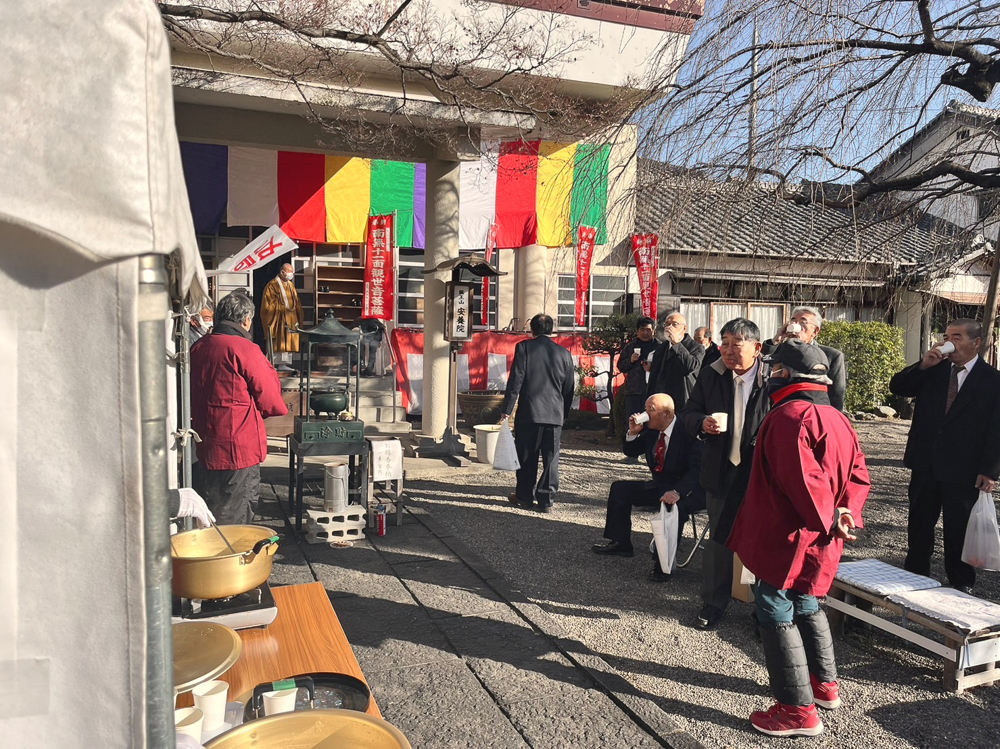

御年始ごねんし
年の初めに、新年の除災招福・豊穣安穏を祈願します。お札と暦をお配りします。悪魔降伏のお札は玄関の前に、大黒天のお札はお仏壇にお貼りください。

節分会せつぶんえ
季節の分かれ目である立春の前日に、除災招福を願う法会です。火に供物を投じて本尊を供養し、厄除け祈願・家内安全・交通安全などのご加護を願う護摩祈祷を行います。豆まきと、鬼退治の劇も上演しています。

天道念仏（涅槃会）てんとうねんぶつ・ねはんえ
大地に恵みを与える太陽を拝んで、五穀の豊作を祈願する儀礼が天道念仏です。2月15日はお釈迦さまの命日にあたり、安養院では釈迦涅槃図をお祀りします。
お花祭りおはなまつり
お釈迦さまの誕生を祝う法会です。花で飾ったお堂（花御堂）に甘茶の入った水盤を置き、お釈迦さまの誕生仏をまつり、誕生仏の頭に甘茶をそそいでお参りします。

盂蘭盆会うらぼんえ
一般にはお盆といわれています。『盂蘭盆経』には、お釈迦さまの弟子の目連尊者が、餓鬼道に落ちて苦しんでいる母を、お釈迦さまの教えに従って僧侶に供養することで救ったと記されています。精霊棚を設け、供物を供えて先祖様の霊を迎えます。

桃の木川灯籠流しもものきがわとうろうながし
笂井町の各団体とともに、水害除けとご先祖様の供養を願う灯籠流しを行っています。願いを込めた手作りの灯籠を持ち寄り、毎回賑わっています。
彼岸会ひがんえ
太陽が真西に沈む春分・秋分の日に、西方極楽浄土におられる阿弥陀仏を礼拝し、先祖の霊を供養します。「彼岸」とは、私たちの住む欲望にまみれた迷いの世界「此岸（しがん）」に対しての悟りの境地のこと。煩悩まみれの自分自身を、悟りの境地に近づけるよう努める期間でもあります。

大般若転読会だいはんにゃてんどくえ
『大般若波羅蜜多経』600巻を転読（経題と文句を唱えながら経を繰り広げる）して、平和・家内安全・厄難消除などを祈願する法会です。『大般若経』は「空」を説く大乗経典で、この経を供養するものは般若守護の十六善神によって常に護持されるといわれています。安養院では三年に一度行っています。